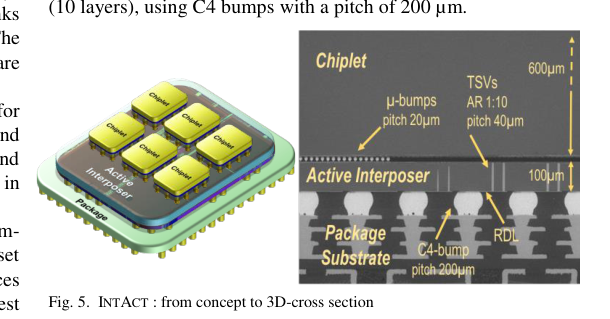
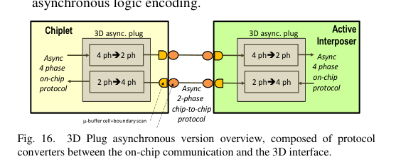
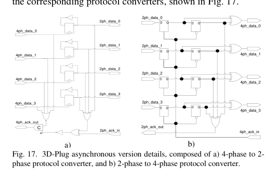
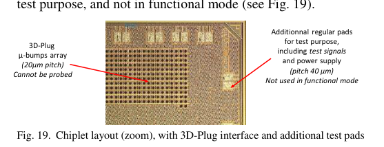
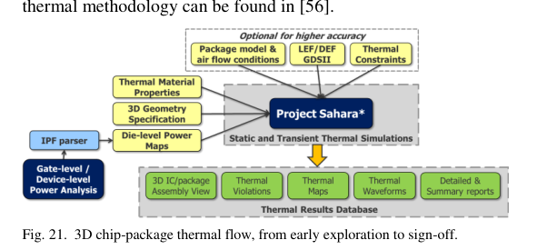
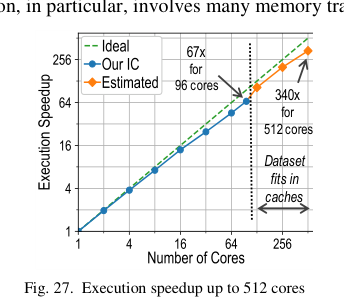

← Daily Papers
本报告由大模型自动生成，可能存在理解、归纳或数据转述错误；请以原论文为准。
IntAct: A 96-Core Processor With Six Chiplets 3D-Stacked on an Active Interposer With Distributed Interconnects and Integrated Power Management Pascal Vivet, Èric Guthmuller, Yvain Thonnart, Gaël Pillonnet, César Fuguet, Ivan Miro-Panades, Guillaume Moritz, Jean Durupt, Christian Bernard, Didier Varreau, Julian J. H. Pontes, Sébastien Thuries, David Coriat, Michel Harrand, Denis Dutoit, Didier Lattard, Lucile Arnaud, Jean Charbonnier, P. Coudrain, Arnaud Garnier, Frederic Berger, Alain Gueugnot, Alain Greiner, Quentin L. Meunier, A. Farcy, Alexandre Arriordaz, Severine Cheramy, Fabien Clermidy · IEEE Journal of Solid-State Circuits · 2020 · 原文 · PDF
报告模型：gemini-3.1-pro-preview / high
本文详细介绍了一篇题为《IntAct: A 96-Core Processor With Six Chiplets 3D-Stacked on an Active Interposer With Distributed Interconnects and Integrated Power Management》的集成电路与计算机体系结构领域的顶级论文。该文章介绍了一个名为 IntAct 的 96 核芯片原型，其核心创新在于采用了一块有源中介层（Active Interposer）来垂直堆叠 6 个计算 芯粒（Chiplet） 。
下面将按文章的逻辑结构，为您逐章节进行详细、连贯的解析。
一、 背景与概念定义 (引言部分)
为了理解本文解决的问题，首先需要建立以下基本背景和术语定义：
背景补充：摩尔定律放缓与芯粒（Chiplet）技术： 在先进制程（如 7nm 及以下）中，制造超大面积的单片系统级芯片（SoC）会面临极低的良率和高昂的掩膜成本。此外，模拟电路（如电源管理、高速 I/O 接口）很难随数字逻辑同比例缩小。因此，业界提出将大系统拆分成多个较小的模块，称为芯粒（Chiplet） 。只有通过测试的“已知良好裸片（KGD, Known Good Die）”才会被组装在一起，从而大幅降低成本。中介层（Interposer）： 将多个芯粒连接在一起的底层基板。目前主流使用的是无源中介层（Passive Interposer） ，例如 TSMC 的 CoWoS 技术。无源中介层仅包含金属连线（Wire-only），没有晶体管，它不能进行逻辑计算或信号放大。论文面临的核心问题： 无源中介层虽然解决了基本互连问题，但存在三大局限：第一，长距离通信会导致信号衰减，必须在芯粒内部进行信号中继，这不利于系统扩展；第二，难以平滑集成具有不兼容接口的不同芯粒；第三，无法将电源管理单元和全局系统 I/O 等难以缩小的模拟功能剥离出先进计算芯粒。本文的解决方案——有源中介层（Active Interposer）： 作者提出在面积庞大的中介层中制造晶体管逻辑。这使得中介层不仅能布线，还能集成分布式片上网络（NoC）、电源管理单元（集成稳压器）和系统测试架构。由于面积大，有源中介层必须采用成熟的低成本、高良率工艺。
二、 IntAct 芯片与系统架构设计 (论文第二、三节)
作者首先明确了硬件约束和作者自己的设计选择（技术分区）。为了在性能与成本之间取得平衡，作者做出了跨代工艺的技术分区选择 ：
计算芯粒（Chiplet）： 采用先进的 28nm FDSOI （原文未说明 FDSOI 的缩写含义）工艺制造。本文定义的Chiplet 是指一块面积为 22.4 mm 2 有源中介层（Active Interposer）： 采用成熟廉价的 65nm CMOS （原文未说明 CMOS 的缩写含义）工艺制造。面积高达 197.8 mm 2 0.08 个晶体管 / μ m 2
3D 堆叠的物理结构（图 5）：
文章展示了多层物理封装结构。数据和电源在这些层级间自下而上流动：

Figure 5 · 原文 PDF 第 5 页
最底层是 10 层的有机封装基板。
基板上方通过 C4 凸块（C4-bumps） （原文未说明 C4 的缩写含义）（直径 90 μ m 200 μ m
有源中介层内部含有 TSV（硅通孔，Through Silicon Via） （直径 10 μ m 100 μ m
有源中介层正面通过高密度的 μ 10 μ m 20 μ m
三、 计算芯粒架构与内存层次 (论文第四节)
这部分解释了分布在各个芯粒上的 96 个核心是如何组织和协作的。
计算集群（Cluster）与瓦片（Tile）的定义： 在本文的设计中，每个 16 核的芯粒被划分为 4 个 Cluster（计算集群） 。每个 Cluster 包含 4 个 32 位标量核心（兼容 MIPS32v1（原文未说明其具体含义）指令集）、各自私有的 L1 缓存以及一个共享的 256KB 分布式 L2 缓存。**Tile（瓦片）**在本文中特指 L3 缓存单元，每个芯粒包含 4 个 1MB 的 L3 Tile，它们作为全局共享的最后一级缓存。
硬件缓存一致性设计与扩展性：
为了支持多核协同，硬件必须保证所有缓存数据的一致性。本文的 L2 缓存采用了基于目录的混合缓存一致性协议（DHCCP, Directory-based Hybrid Cache Coherence Protocol）。
作者面临的问题是，随着核心数增加，记录“哪个核心拥有哪块数据”的目录存储开销会爆炸。为此，作者做出设计选择：对于少数核心共享的数据，采用列表模式（List mode）记录具体的共享者 ID；当共享核心数超过预设阈值（本文设为 4）时，切换为 计数器模式（Counter mode） ，只记录数量，更新时直接在网络中发起广播。这种设计仅用了 2% 的芯片面积就实现了缓存一致性的硬件追踪。结合物理地址的高 8 位来决定数据存储的具体瓦片位置（非统一内存架构（NUMA, Non Uniform Memory Architecture）），这使得整个缓存架构在逻辑上能够扩展至 896 核。
四、 集成电压稳压器 (论文第五节)
为了给 6 个芯粒独立供电，同时避免引出过多的外部电源引脚，作者在有源中介层中设计了集成开关电容电压稳压器（SCVR, Switched Capacitor Voltage Regulator） 。
为什么这么做（背景）： 传统 SoC 依赖外部（主板上）的电压转换器，需要消耗大量芯片引脚引入低压大电流，且会产生 IR Drop（电阻带来的电压降）。本文将 SCVR 直接做到芯粒正下方的有源中介层中，实现了就近供电。设计细节与表 2： SCVR 采用了并并-串联的 3 级齿轮箱拓扑，可以提供从 4:1 到 4:3 共 7 种无损电压转换比率（无量纲），支持单芯粒级别的动态电压频率调节（DVFS）。由于中介层采用 65nm 工艺，作者利用了 MOS、MOM 和 MIM（原文未说明这三个缩写的具体含义）多层电容堆叠，获得了 8.9 nF/mm 2 结果说明： 表 2 和实验数据表明，该 SCVR 在 156 mW/mm 2
五、 3D-Plug 通信接口与系统级互连 (论文第六、七节)
有源中介层的核心价值在于数据路由。作者设计了名为 **3D-Plug（3D 插头）**的标准化软硬件接口，用于连接芯粒和中介层。
3D-Plug 是什么： 它不仅包含物理上的微凸块阵列，还包含了微缓冲单元（包含静电保护 ESD 驱动、跨 1.0V/1.2V 电压域的电平转换器），以及用于边界扫描的测试逻辑。片上网络（NoC）的三层划分： 作者设计了三个维度的网络：
N1 网络（L1-L2 互连）： 负责邻近芯粒间的短距离高带宽通信。作者的设计选择是，这部分信号直接穿过同步版本的 3D-Plug，在有源中介层中仅通过被动金属线（不经过晶体管）连接相邻芯粒，延迟极低（7.2 纳秒）。N2 网络（L2-L3 互连）： 负责整个 200 mm 2 N3 网络（L3-外部内存）： 负责通往芯片外部的同步网络。
异步 3D-Plug 与协议转换（图 16 和图 17）：
为了解决大面积中介层上时钟树难以平衡、容易出现时钟偏差的问题，作者在 N2 网络的设计中引入了 GALS（全局异步局部同步） 架构。

Figure 16 · 原文 PDF 第 10 页 
Figure 17 · 原文 PDF 第 10 页
推理链条： 芯粒内部是同步的 → → 协议转换细节： 作者在 3D 接口处使用了 2 相（2-phase）握手协议以减少 3D 垂直往返延迟对吞吐量的惩罚；而在中介层平面内部使用了 4 相（4-phase）协议以简化逻辑。编码方式采用 1-of-N（本文 N = 4 N = 4 0.52 pJ/bit/mm 25 mm
六、 测试性与 3D DFT 架构 (论文第八节)
3D 集成带来的最头疼的硬件约束之一是测试 。微凸块（20 μ m
作者怎么做： 作者在芯粒外围额外增加了常规尺寸（40 μ m 
Figure 19 · 原文 PDF 第 12 页 DFT（可测性设计）架构： 整个 3D 芯片集成了一个符合 IEEE 1687（IJTAG）标准的层次化测试链。底层中介层就像一块主板上的 JTAG 链一样，串联了 6 个“芯粒足迹（Chiplet footprints）”。测试机可以通过主 TAP（原文未说明 TAP 的缩写含义）接口，发送压缩的扫描向量，自动对数以万计的 3D 主动链路、被动链路以及各个芯粒内的内存 BIST（内建自测试）引擎进行自动化测试。这解决了 3D 封装后内部互连短路、断路无法排查的行业痛点。
七、 架构与 EDA 的跨层协同：热挑战与策略 (论文第九节)
本节明确展示了体系结构设计与 EDA（电子设计自动化）工具之间的紧密反馈闭环。
为什么有问题： 传统的无源中介层本身不发热。但本文中，底层的有源中介层因为包含了 6 个集成稳压器和异步 NoC 网络，也成为了热源。两层热源叠加，配合各种倒装材料、底部填充胶各异的热导率，很容易导致“热失控（Thermal runaway）”。跨层接口与信息传递（图 21）： 在评估阶段，架构侧提供了每个模块的静态和动态功耗映射图（Power Maps）（比如设定最坏情况：每个计算芯粒 3 瓦，中介层 10 瓦）。这些功耗数据，结合芯片的底层 GDS（原文未说明 GDS 的缩写含义）版图文件（包含了材料、几何结构的详细物理信息（在全系统封装和风扇的上下文中进行建模，存在一定的信息损失）），作为设计输入（design entry）传递给 EDA 侧的 Mentor Graphics Project Sahara 商业热仿真工具。
Figure 21 · 原文 PDF 第 13 页 结果反馈： EDA 仿真结果（图 23 热力图）返回给架构师，证明在采用常规散热器和风扇的封装条件下，整个 3 W × 6 + 10 W = 28 W 53 ∘ C 0.14 W/mm 2
八、 整体电路评估与总结 (论文第十、十一节)
性能指标与实验现象：
作者定制了一块带有 FPGA（原文未说明其缩写含义）和 DDR4（原文未说明其缩写含义）内存的 ATX（原文未说明其缩写含义）主板来实测该芯片（甚至在上面跑起了 Linux）。
利用 FDSOI 工艺特有的 FBB（正向体偏置，Forward Body Biasing） 技术（通过施加 ± 2 V 1.3 V 1.15 GHz
图 27（执行时间加速比）说明了什么： 在图像滤波应用的实测中，横坐标是核心数，纵坐标是加速比。曲线表明，当调用 96 核时，实现了 67 倍的加速（无量纲）；在仿真扩展到 512 核时，实现了 340 倍的加速（无量纲）。这证实了作者前文设计的分布式混合缓存一致性协议和异步片上网络不仅有效，而且具有准线性的极高扩展性。
Figure 27 · 原文 PDF 第 15 页
全文主线总结与局限性说明：
主线串联： 本文针对高级制程中单片系统面临的良率危机与中介层单纯物理连线的通信瓶颈，提出了“有源中介层”这一核心解法。通过合理的工艺分区（28nm 计算 + 65nm 中介），不仅利用便宜的成熟工艺实现了整个大面积芯片的布线，更巧妙地把一直拖后腿的电源管理模块（SCVR）、全局异步网络中继和测试逻辑（DFT）放到了这块闲置的底层“主板”上，最终实现了一套完全可扩展、易验证的 96 核 3D 架构。关键假设与局限性：
稳压器效率权衡： 尽管将稳压器做到中介层省去了引脚并降低了 IR Drop，但 82% 的峰值效率实际上低于主流外置 DC-DC（原文未说明其缩写含义）转换器。作者是用“减少物料成本和系统复杂度”来换取了这部分电源转换效率的损失。良率假设不能过度推广： 有源中介层路线之所以成立，极大程度上依赖于作者让 65nm 层保持了极低的逻辑密度（仅消耗了全芯片 3% 的功耗，大部分面积给了电容）。如果未来试图在中介层塞入更复杂的逻辑或缓存，该路线高良率的前提假设将被打破，成本将重新飙升。